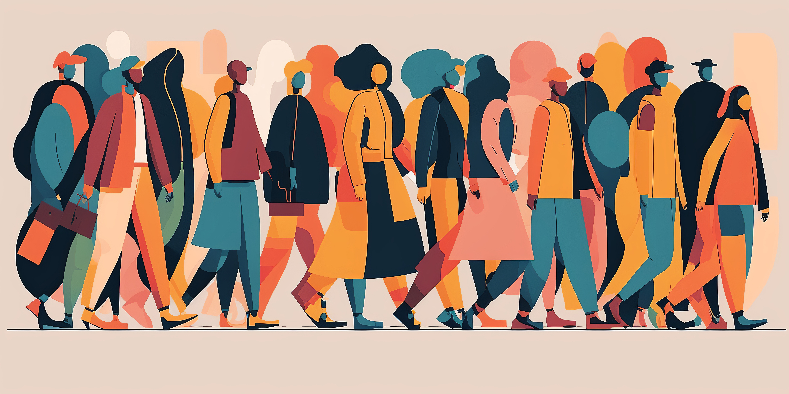

WP2 Impact sur les sciences humaines et l'acculturation à l'IA
Fabienne Greffet
Professeure des universités
Irenée
Jean-Philippe Viriot-Durandal
Professeur des universités
CREAT
Les objets d'étude des sciences humaines sont aujourd'hui concernés par l'IA à au moins trois niveaux.
Le premier concerne la construction des objets de recherche : les dispositifs numériques modifient profondément les pratiques sociales et un certain nombre de conceptualisations associées. Les communautés concernées s'interrogent progressivement sur la portée, la validation et la reconfiguration des théories des sciences sociales et des sciences humaines dans des sociétés où l'IA est omniprésente.
Vient ensuite l'utilisation d'outils d'analyse automatique pour générer de nouvelles données, traiter des données existantes, ou les deux. Les chercheurs en sciences humaines et sociales doivent de plus en plus s'acculturer à l'IA, tant leurs pratiques sont profondément transformées par la possibilité d'exploiter de vastes ensembles de données et corpus.
Enfin, vient la question de la restitution de ces objets : l'IA peut contribuer à la rédaction et/ou à la traduction, dans la mesure où les chercheurs saisissent les motifs et intentions encodés dans ces dispositifs et, éventuellement, participent à leur amélioration. Il s'agit donc d'envisager l'impact des sciences humaines sur l'IA, plutôt que simplement l'inverse.

L'objectif de ce workpackage est de présenter et de mettre à la disposition de la communauté de recherche en sciences humaines des outils d'IA concrets susceptibles d'équiper les projets de recherche, et de sensibiliser la communauté aux usages possibles ainsi qu'à leurs limites. Parmi les actions envisagées figurent : un état des lieux des collaborations existantes au sein de l'Université de Lorraine ou avec d'autres partenaires ; des formations à différents systèmes dans le cadre de projets de recherche ; ainsi qu'une évaluation ex post permettant de proposer des améliorations pour le développement d'autres systèmes. Des expérimentations limitées pourront être envisagées, afin d'ancrer les systèmes d'IA dans les routines et pratiques des chercheurs en sciences humaines.